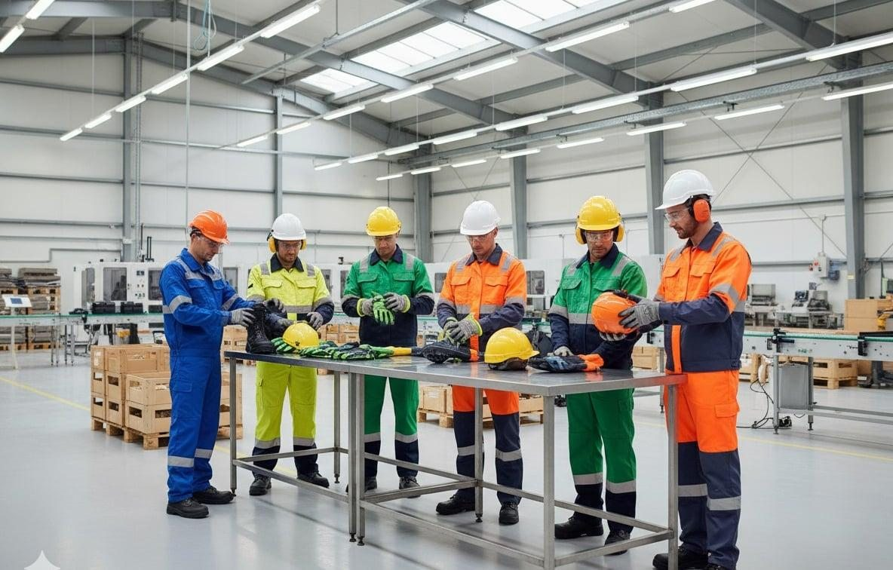

Trước khi bắt đầu mỗi ca làm việc, việc kiểm tra an toàn tại nhà máy và xưởng sản xuất là bước quan trọng nhằm phát hiện sớm những nguy cơ có thể dẫn đến tai nạn lao động. Từ tình trạng máy móc, hệ thống điện đến trang thiết bị bảo hộ cá nhân, mỗi hạng mục đều cần được kiểm tra kỹ lưỡng để bảo đảm quá trình sản xuất diễn ra an toàn, liên tục.
1. Kiểm tra khu vực làm việc và điều kiện môi trường
Trước khi vận hành máy móc, người lao động cần quan sát tổng thể khu vực làm việc để nhận diện những yếu tố có thể gây mất an toàn.
Một số nội dung cần chú ý gồm:
- Kiểm tra lối đi, hành lang và cửa thoát hiểm, bảo đảm không bị hàng hóa hoặc vật dụng cản trở.
- Quan sát sàn nhà, phát hiện dầu mỡ, nước đọng hoặc vật cản có nguy cơ gây trượt ngã.
- Kiểm tra hệ thống chiếu sáng, thông gió và các biển báo an toàn.
- Xác định vị trí đặt bình chữa cháy, tủ thuốc sơ cứu và thiết bị xử lý sự cố.
- Kiểm tra khu vực lưu trữ nguyên vật liệu, hóa chất và các vật liệu dễ cháy.
Đối với những môi trường sản xuất đặc thù như xưởng cơ khí, khu vực hàn cắt hoặc nhà máy hóa chất, cần chú ý thêm đến nguy cơ phát sinh tia lửa, bụi công nghiệp, khí độc và các yếu tố ảnh hưởng đến sức khỏe người lao động.
2. Kiểm tra tình trạng máy móc và thiết bị sản xuất
Máy móc là một trong những nguồn phát sinh rủi ro tai nạn phổ biến trong môi trường công nghiệp. Vì vậy, việc kiểm tra thiết bị trước khi vận hành cần được thực hiện theo quy trình cụ thể.
Người lao động và bộ phận kỹ thuật cần chú ý:
- Kiểm tra tình trạng bên ngoài của máy móc, phát hiện dấu hiệu nứt vỡ, biến dạng hoặc rò rỉ.
- Kiểm tra các bộ phận chuyển động, dây curoa, bánh răng và cơ cấu truyền động.
- Đảm bảo tấm chắn bảo vệ và các cơ cấu an toàn được lắp đặt đúng vị trí.
- Kiểm tra nút dừng khẩn cấp và các thiết bị cảnh báo theo hướng dẫn vận hành.
- Quan sát dây dẫn, phích cắm, tủ điện và hệ thống cấp nguồn.
- Kiểm tra dụng cụ, thiết bị phụ trợ trước khi đưa vào sử dụng.
Nếu phát hiện máy móc có dấu hiệu bất thường như rung lắc mạnh, phát ra tiếng ồn lạ, quá nhiệt hoặc có mùi khét, cần dừng việc đưa thiết bị vào vận hành và thông báo cho người phụ trách kỹ thuật.
Đặc biệt, tuyệt đối không tự ý tháo bỏ tấm chắn bảo vệ hoặc sửa chữa thiết bị khi chưa thực hiện đầy đủ quy trình cô lập nguồn năng lượng.
3. Kiểm tra trang thiết bị bảo hộ cá nhân
Trang thiết bị bảo hộ cá nhân (PPE) là lớp bảo vệ quan trọng giúp hạn chế tác động của các yếu tố nguy hiểm đến người lao động. Trước mỗi ca làm việc, mỗi cá nhân cần kiểm tra tình trạng và mức độ phù hợp của trang bị được cấp phát.

Một số thiết bị cần kiểm tra gồm:
- Mũ bảo hộ: Không bị nứt, vỡ, biến dạng; quai đeo và hệ thống điều chỉnh còn hoạt động tốt.
- Giày bảo hộ: Đế giày không bị mòn, bong tróc; phù hợp với môi trường làm việc.
- Găng tay bảo hộ: Không rách, thủng hoặc nhiễm bẩn; đúng chủng loại theo tính chất công việc.
- Kính bảo hộ: Bề mặt kính không nứt vỡ, bảo đảm tầm nhìn và khả năng che chắn.
- Khẩu trang, thiết bị bảo vệ hô hấp: Phù hợp với loại bụi, khí hoặc hơi hóa chất có thể xuất hiện tại nơi làm việc.
- Quần áo bảo hộ: Không vướng víu, rách hỏng hoặc có chi tiết dễ mắc vào bộ phận chuyển động của máy móc.
Việc sử dụng bảo hộ lao động cần căn cứ vào mức độ nguy hiểm và đặc thù của từng vị trí công việc. Người lao động không nên sử dụng thiết bị đã hư hỏng hoặc tự ý thay thế bằng những sản phẩm không đáp ứng yêu cầu bảo vệ.
4. Trao đổi thông tin và phổ biến các nguy cơ trước ca làm việc
Bên cạnh kiểm tra máy móc và thiết bị, việc trao đổi thông tin giữa người lao động, tổ trưởng và bộ phận phụ trách an toàn cũng đóng vai trò quan trọng.
Trước khi bắt đầu ca, người phụ trách cần phổ biến nhiệm vụ, nhắc nhở những nguy cơ có thể phát sinh và thông tin về các khu vực đang sửa chữa, bảo trì hoặc hạn chế tiếp cận.
Đối với những công việc có mức độ rủi ro cao như làm việc trên cao, hàn cắt kim loại, vận hành máy nâng hoặc tiếp xúc với hóa chất, cần kiểm tra điều kiện an toàn và giấy phép làm việc theo quy định áp dụng trước khi triển khai.
Người lao động cũng cần chủ động phản ánh những bất thường đã phát hiện trong quá trình kiểm tra. Mọi nguy cơ chưa được kiểm soát cần được xử lý trước khi công việc bắt đầu, thay vì chờ đến khi xảy ra sự cố mới khắc phục.
5. Hoàn thành checklist và xác nhận điều kiện làm việc an toàn
Sau khi kiểm tra các hạng mục, người lao động hoặc người được phân công cần ghi nhận kết quả vào bảng kiểm tra an toàn đầu ca. Đây là căn cứ để theo dõi tình trạng thiết bị, phát hiện những vấn đề lặp lại và xác định trách nhiệm xử lý.
Chủ động kiểm tra đầu ca – Nền tảng xây dựng môi trường làm việc an toàn
Kiểm tra an toàn trước mỗi ca làm việc không đơn thuần là một thủ tục hành chính mà cần trở thành thói quen trong hoạt động sản xuất. Một quy trình được thực hiện nghiêm túc sẽ giúp doanh nghiệp phát hiện sớm nguy cơ, hạn chế tai nạn và giảm thiểu những gián đoạn không đáng có.
Để xây dựng môi trường làm việc an toàn, doanh nghiệp cần kết hợp kiểm tra thiết bị, trang bị bảo hộ phù hợp, đào tạo kỹ năng và nâng cao ý thức của từng cá nhân. An toàn lao động chỉ thực sự được bảo đảm khi mỗi người đều chủ động nhận diện rủi ro và có trách nhiệm với công việc của mình.